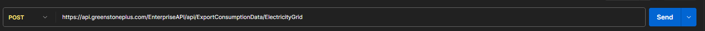
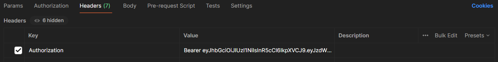
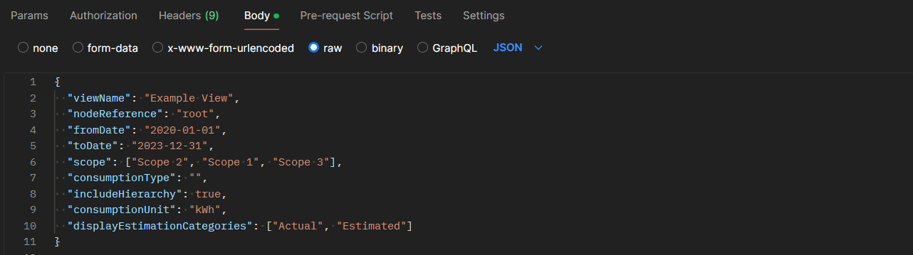
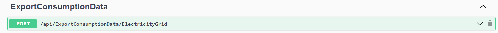

To start requesting data, open an external API client, such as Postman. Note: The screenshots below are from the Postman application, one of the best and easiest tools for working with APIs.
Set the method to POST and enter the appropriate URL. These URLs can be found in the available endpoints section below.

In the headers tab set the key to ‘Authorizationi’. The value should be “Bearer” and the token generated in SPM platform separated by a space.

Requests can be entered in the ‘Body’ tab as shown below.

You can also access the API using the Swagger link: Swagger UI (greenstoneplus.com):
A list of the available endpoints can be found at the swagger link: Swagger UI (greenstoneplus.com) The URL that was outlined in the “Setting the URL” section above is a combination of “https://api.greenstoneplus.com/EnterpriseAPI” and the endpoint as shown in the Swagger page.

For example, the URL for exporting Electricity (Grid) consumption data is: https://api.greenstoneplus.com/EnterpriseAPI/api/ExportConsumptionData/ElectricityGrid